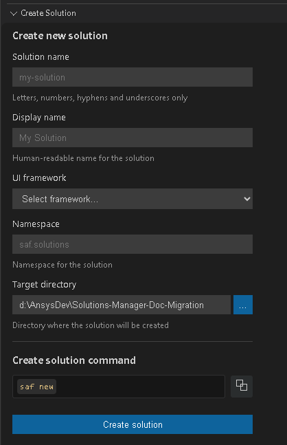
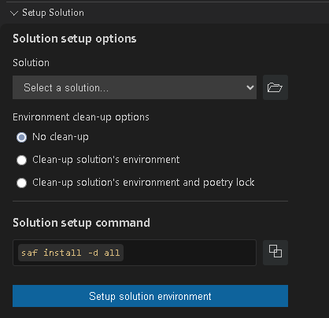
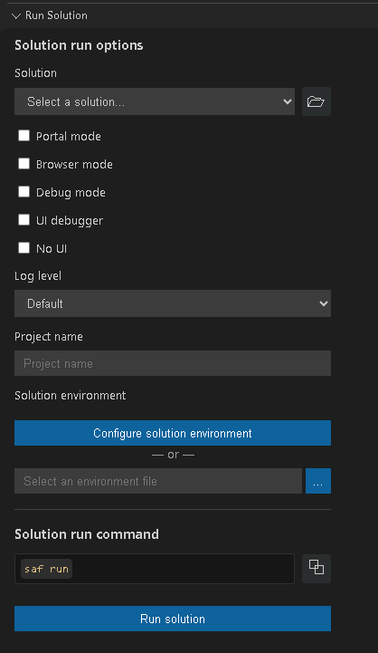
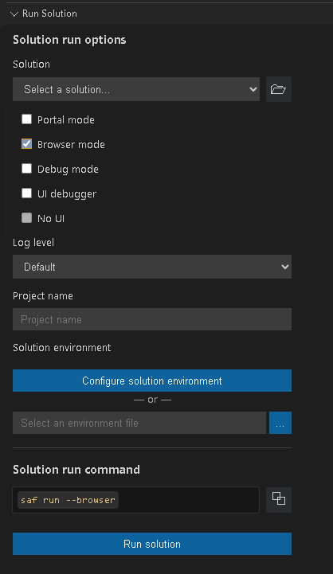
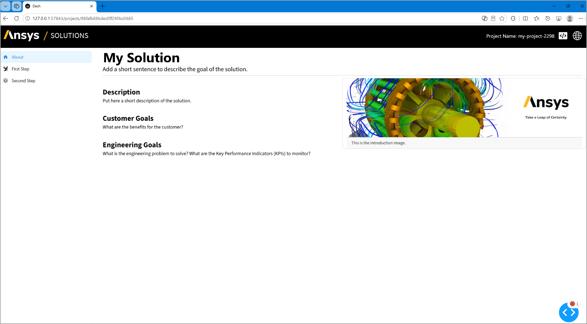
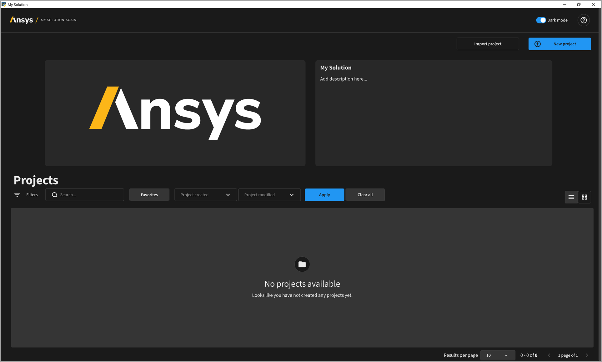

Quick-start guide#
Follow these instructions to quickly create, set up, and run a minimal SAF-based solution. You can use either the SAF CLI tool or the Solutions Manager VS Code extension.
Create a solution#
Create a solution using SAF CLI:
Instantiate the solution template:
saf newWhen prompted, provide the following values, pressing Enter to select the default value or to validate non-default values provided.
Enter a solution name.
You can use the default option (
my-solution) or provide a custom one.Enter a solution display name.
You can use the default option (
My Solution) or provide a custom one.Specify the UI framework.
You can use the default option (
dash) or selectnone.Enter the solution namespace.
You can use the default option (
saf.solutions) or provide a custom one.
A directory with the solution name is created in the current directory.
Create a solution using Solutions Manager:
Open Visual Studio Code.
In the Activity Bar, click the Solutions Manager icon.
In the Solutions Manager pane, expand the Create Solution view.

Provide the following values:
Enter a solution name.
You can use the default name (
my-solution) or provide a custom one.Enter a solution display name.
This value is automatically generated based on the solution name (
My Solution). You can modify it as needed.Select the UI framework.
Select a framework to use for the solution.
Enter the solution namespace.
Enter the namespace to use for the solution.
Enter the target directory.
Enter the directory where the solution will be saved.
Generate the solution.
Click the Create solution button. Alternatively, you can copy the command under Create solution command and run it in the terminal.
{kind=link}
A directory with the solution name is created in the target directory.
The solution generated from the template is a simple two-step, three-page solution.
See also
For more detailed information, see Create a solution in the User guide.
Install the solution#
Install the solution using SAF CLI:
Change to the solution’s root directory:
cd <solution_name>
Install the solution’s development environment:
saf install -f
Install the solution using Solutions Manager:
Note
These instructions assume that VS Code is already open.
In the Solutions Manager pane, expand the Setup Solution view.

Provide the following values:
Select the solution you want to install.
You can either select an option from the list of available solutions or browse for the solution folder of a different one.
Select an environment cleanup option.
You can either use the default option (No clean-up) or select a different one.
Set up the environment.
Click the Setup solution environment button. Alternatively, you can copy the command under Solution setup command and run it in the terminal.
{kind=link}
The installation installs all necessary dependencies. You can monitor its progress in the terminal.
See also
For more detailed information, see Install in the User guide.
Run the solution#
You can open the solution in a desktop window , a web browser , or the SAF Portal, which provides a project management interface for the solution.
See also
For more detailed information, see Run a solution on desktop in the User guide. This section covers concepts that are generally applicable to all three SAF run modes.
Run the solution in a desktop window#
Run the solution in a desktop window using SAF CLI:
saf run
Note
These instructions assume that VS Code is already open.
Run the solution in a desktop window using Solutions Manager:
In the Solutions Manager pane, expand the Run Solution view.

Provide the following values:
Select the solution you want to run.
You can either select an option from the list of available solutions or browse for the solution folder of a different one.
Select your run options:
Ensure that Portal mode and Browser mode are not selected.
Select a log level:
The default log level is INFO. You can select a different log level if needed.
Enter a project name.
Enter the name of the project you want to run.
Specify the solution environment.
Click the Configure solution environment button to open the SAF Environment Configuration interface in the VS Code editor. Alternatively, you can browse to an environment (
.env) file.
Modify SAF Environment Configuration settings as needed and click the Save Configuration button.
Run the solution.
Click the Run solution button. Alternatively, you can copy the command under Solution run command and run it in the terminal.
{kind=link}
The solution UI opens in a desktop window.

Run the solution in a web browser#
Run the solution in a web browser using SAF CLI:
saf run --browser
Run the solution in a web browser using Solutions Manager:
Note
These instructions assume that VS Code is already open.
In the Solutions Manager pane, expand the Run Solution view.

Provide the following values:
Select the solution you want to install.
You can either select an option from the list of available solutions or browse for the solution folder of a different one.
Select your run options:
Ensure that Browser mode is selected.
Select a log level:
The default log level is INFO. You can select a different log level if needed.
Enter a project name.
Ener the name of the project you want to run.
Specify the solution environment.
Click the Configure solution environment button to open the SAF Environment Configuration interface in the VS Code editor. Alternatively, you can browse to an environment (
.env) file.
Modify SAF Environment Configuration settings as needed and click the Save Configuration button.
Run the solution.
Click the Run solution button. Alternatively, you can copy the command under Solution run command and run it in the terminal.
{kind=link}
The solution UI opens in a web browser window.

Run the solution from SAF Portal#
Run the solution from SAF Portal using SAF CLI:
saf run --portal
Run the solution from SAF Portal using Solutions Manager:
Note
These instructions assume that VS Code is already open.
In the Solutions Manager pane, expand the Run Solution view.

Provide the following values:
Select the solution you want to install.
You can either select an option from the list of available solutions or browse for the solution folder of a different one.
Select your run options:
Ensure that SAF Portal mode is selected.
Select a log level:
The default log level is INFO. You can select a different log level if needed.
Enter a project name.
Ener the name of the project you want to run.
Specify the solution environment.
Click the Configure solution environment button to open the SAF Environment Configuration interface in the VS Code editor. Alternatively, you can browse to an environment (
.env) file.
Modify SAF Environment Configuration settings as needed and click the Save Configuration button.
Run the solution.
Click the Run solution button. Alternatively, you can copy the command under Solution run command and run it in the terminal.
The solution opens in the SAF Portal user interface. SAF Portal provides a project management interface for the solution, allowing you to create new projects, view existing projects, and manage project settings.
